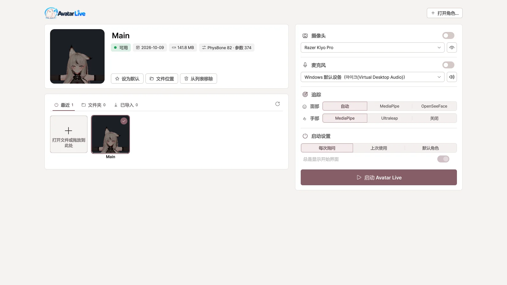
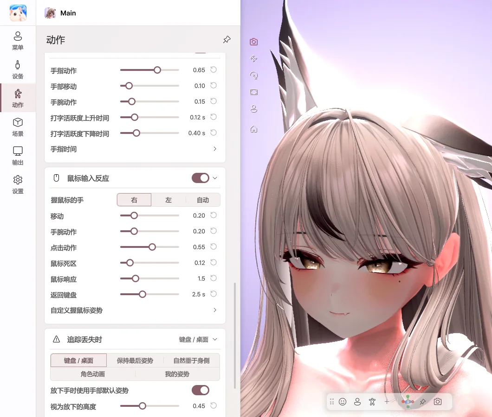
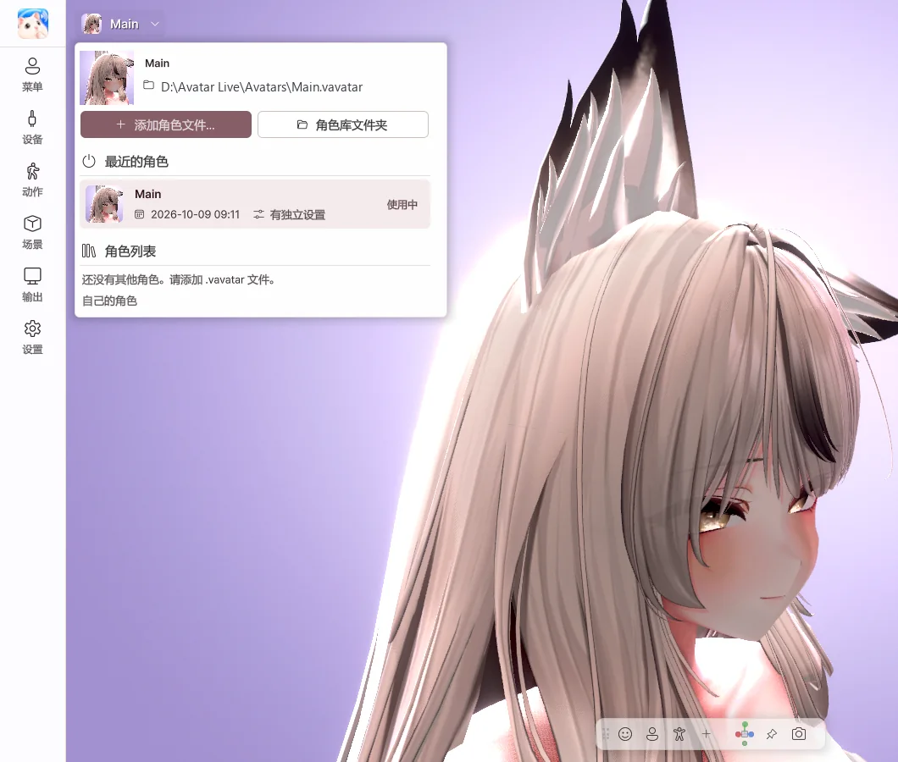
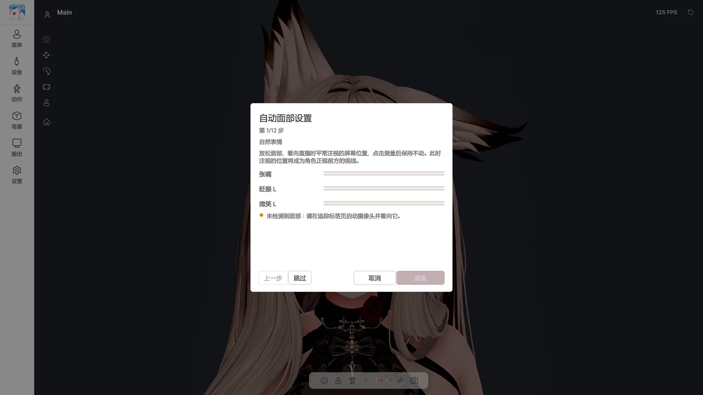
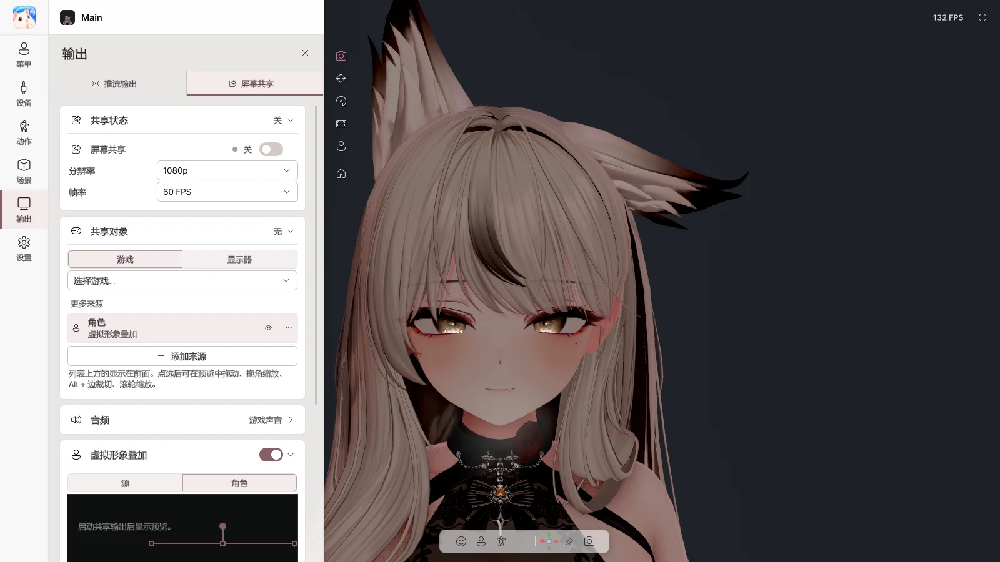

无需 VRM 转换
在角色项目中导出一次即可。修改角色后，也只需重新导出。
为 VRChat 角色打造的 Windows VTuber 应用
无需转换 VRM，也无需繁琐的重新设置。
把熟悉的角色用在直播和屏幕共享中吧。
可直接用于
功能
无需重新制作。角色里的一切都会照原样运作。

在角色项目中导出一次即可。修改角色后，也只需重新导出。

直接呈现角色所用的 Poiyomi、lilToon 等着色器。
从头发的摆动、服装开关到表情按钮，都以与 VRChat 相同的设置运作。
只需一个摄像头，即可追踪表情、视线、手指关节乃至全身。iPhone 和 VMC（全身追踪器 · 手套）也能按部位混合使用。

即使手不在画面中，角色的手也会配合打字和鼠标操作而动。不会记录输入的文字。
向 OBS 发送透明背景画面，向 Discord 发送游戏与角色合一的画面。
使用方法
打开平时上传到 VRChat 的角色的 Unity 项目（2022.3.22f1）。
在 Curious Bobby - Avatar Exporter 中一键生成 .vavatar 文件。
打开文件并开启摄像头，角色就会立刻动起来。之后不再需要 Unity。
仅有 VRM · .vrca 文件无法使用，需要角色的 Unity 项目。 查看导出指南
一览






对比
支持范围可能因软件而异。
版本
Basic 和 Pro 是同一个程序，版本由输入的许可证决定。
个人使用
1,990 日元
直播 · 公开发布视频 · 商业用途
3,980 日元
如果已经在使用 Basic，通过 BOOTH 的升级（1,990 日元）即可成为 Pro。
价格以 BOOTH 上的标示为准。由于数字商品的特性，购买后原则上难以退款，请在购买前确认准备事项。 退款政策
FAQ
可以。从上传到 VRChat 的角色 Unity 项目中用 Exporter 导出后，Expression 菜单会和在 VRChat 中一样工作，连服装和配饰的开关也原样保留。着色器和 PhysBone 也保持不变。
制作角色文件时需要一次（Unity 2022.3.22f1）。制作完成后，无需 Unity 即可使用。
目前不支持。计划今后支持加载 VRM。
角色使用的着色器会原样显示。我们已在 Poiyomi、lilToon 等 200 多种着色器上进行了测试。
可以。开启屏幕共享，然后在 Discord 中选择“Avatar Live Share Output”，游戏和角色就会一起共享。
Basic 是用于个人使用（包括与朋友之间的非公开 Discord 共享）的版本，Pro 是用于直播 · 公开发布视频 · 商业用途的版本。Pro 支持 4K 输出、无水印、摆姿势、姿势库和物体。
仅支持 Windows 10 / 11（64 位）。